Asztal
Az asztal a grafikus felhasználói felület alapja. Ezen helyezkednek el az ablakok, ikonok, gombok és egyéb grafikus elemek.
Tálca
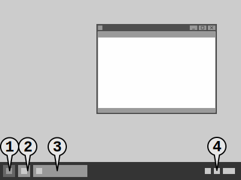
Az asztal egyik legfontosabb része a tálca, ami az alábbi elemeknek adhat helyet:
- A start menü gombja
- Tálcára rögzített parancsikon
- Megnyitott programablak gombja
- Értesítési terület
A tálca elhelyezkedése és tartalma az operációs rendszertől függ, és általában testreszabható. Elhelyezhetjük az ablak alján, tetején és oldalain is. A program elindítása után a rögzített parancsikon helyére a programablak gombja kerül.
Az érintőképernyőre optimalizált felhasználói felületeken a tálca általában hiányzik.
Start menü
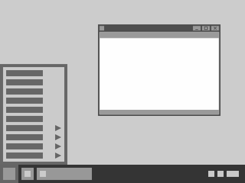
A start menü az operációs rendszer főmenüje. A tartalma teljes mértékben testreszabható, de sok operációs rendszer megpróbálja automatikusan a felhasználó igényeihez igazítani. A rendszerbeállítások és a telepített programok mellett általában itt találjuk a felhasználóváltás és a kikapcsolás lehetőségeit is.
Értesítési terület
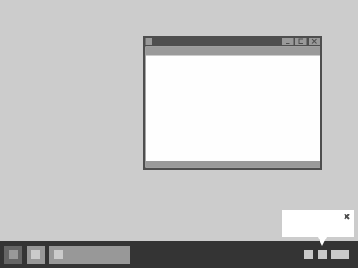
Az éretesítési területen különböző programok aktuális állapotát láthatjuk. Az összetétele testreszabható, és általában tartalmazza a következőket:
- Rendszeridő
- Hálózati kapcsolatok
- Hangerő
- Energia ellátás
- Rendszer állapot
Az ikonok mellett értesítések is megjelenhetnek egy szövegbuborékhoz hasonló ablak formájában. Ezeket küldheti az operációs rendszer és a felhasználói programok is.
Ha a felhasználói felületen nincs tálca, akkor az értesítési terület általában a képernyő tetejéről nyitható meg.
Ikonok
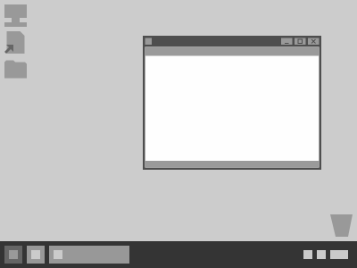
Az ikonok állományokat, eszközöket és parancsokat szimbolizálnak. Az asztalra programok és dokumentumok ikonjait rögzíthetjük.
Az ikon egy speciális fajtája a parancsikon. Ebben az esetben az ikon nem ugyanabban a könyvtárban helyezkedik el, mint ahol a hozzá társított állomány. Ezt gyakran egy kis nyíl jelzi a parancsikon valamelyik sarkában, de az is lehet, hogy ugyanúgy néz ki, mint egy hagyományos ikon.
Csempék
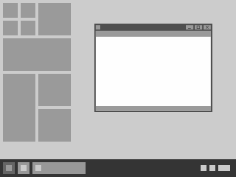
A csempék egyszerre valósítják meg az ikonok és az értesítési terület funkcióit. Jelképezik az állományt, és kattintásra elindítják hozzájuk társított programot. Ugyanakkor egyben üzeneteket és a fájl tartalmának előnézetét is képesek megjeleníteni.
A csempéket különböző méretűre lehet állítani, így egy hagyományos ikontól egy kis méretű ablakig terjedően többféle módon tudjuk őket használni.
Ablakok
A felhasználói felületen az ablak foglalja magába az állományokhoz tartozó grafikus elemek többségét. Behatárolja az állomány által elfoglalt területet a képernyőn, és eszközöket biztosít az állomány kezeléséhez.
Programablak
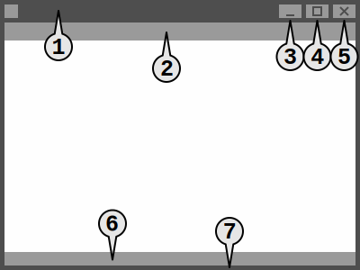
Programablaknak nevezzük a felhasználói felületnek azt a részét, amit a futtatható állományok kezelésére hoz létre az oprációs rendszer. A programablak általában rendelkezik egy gombbal a tálcán és a következő elemekkel:
- Címsor
- Menü/eszköztár
- Kis méret gombja (a tálcára helyezi az ablakot)
- Előző/teljes méret gombja
- A programablak bezáró gombja
- Állapotsáv
- Ablakszegély
A programablakot a címsoránál fogva tudjuk mozgatni, az ablakszegélynél fogva pedig átméretezni. Teljes képernyős módban viszont a címsor és az ablakszegély nem látszik.
Dokumentumablak

A programokkal általában valamilyen dokumentumot kezelünk. Minden dokumentum rendelkezik egy saját dokumentumablakkal, ami egy programablakon belül helyezkedik el. Egy programablak egy vagy több dokumentumablakot tartalmazhat. Ha többet tartalmaz, akkor a dokumentumablakokhoz általában lapfülek vannak társítva.
A dokumentumablak a következő grafikus elemekkel rendelkezik:
- Aktív lapfül
- Inaktív lapfül
- A dokumentumablak bezáró gombja
- Fülsáv
- Görgetősáv
A görgetősávok általában csak akkor jelennek meg, ha a teljes dokumentum nem fér el a programablakban.
Párbeszédablak
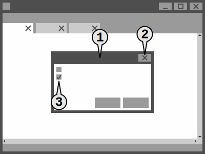
A párbeszédablak egy kétirányú kommunikációs felület a program és a felhasználó között. Kétféle típusa van. Az egyik a felhasználó közbeavatkozását kéri valamilyen művelet elvégzése előtt (pl.: bezárás, törlés). Ilyenkor legalább egy OK és egy Mégse gomb áll a rendelkezésünkre. A másik típus beállítási lehetőségeket, űrlapelemeket tartalmaz, amik segítségével a felhasználó vezérelni tudja a programot.
A párbeszédablak a következő részekből épül fel:
- A párbeszédablak címsora
- A párbeszédablak bezáró gombja
- Űrlapelemek
A párbeszédablakot a címsoránál fogva ugyanúgy tudjuk mozgatni, mint a programablakot. A tálcára tenni viszont nem tudjuk, és általában átméretezni sem lehet.
Üzenetablak
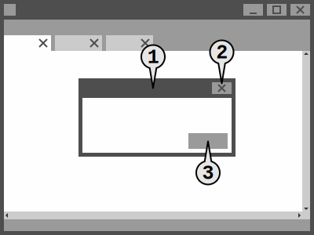
Az üzenetablak egy egyirányú kommunikációs felület a program és a felhasználó között. Általában az üzenet nyugtázása nélkül nem folytatható a program használata. Az üzenetablak legtöbbször csak egy OK gombot tartalmaz.
Az üzenetablak a következő részekből épül fel:
- Az üzenetablak címsora
- Az üzenetablak bezáró gombja
- Nyugtázó gomb
Az üzenetablakot a címsoránál fogva ugyanúgy tudjuk mozgatni, mint a programablakot. A tálcára tenni viszont nem tudjuk, és általában átméretezni sem lehet.
Menük
Program menü
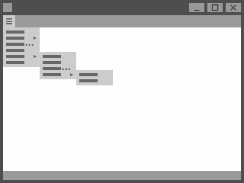
Menünek nevezzük a programban elérhető funkciók csoportosított gyűjteményét. A menüsáv általában a programablak tetején helyezkedik el.
A menü menüpontokból épül fel. A menüpontokra kattintva három dolog történhet:
- A program végrehajtja a menüponthoz társított utasítást.
- A menüpontból egy párbeszédablak nyílik. Ezt általában a "…" karakter jelzi a menüpont címkéjének a végén.
- A menüpontból egy almenü nyílik, ami újabb menüpontokat tartalmaz. Ezt általában egy jobbra mutató háromszög jelöli.
Az elmúlt években gyakorivá vált, hogy a program menü helytakarékosság miatt nem menüsorban helyezkedik el, hanem egy eszköztáron elhelyezett gombra kattintva lehet elérni. A gomb gyakran használt, jellegzetes ikonja miatt gyakran nevezik ezt hamburger menünek.
Helyi menü
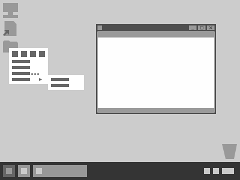
A helyi menü felépítésében megegyezik a program menüvel, de a tartalma aszerint változik, hogy a felhasználói felületnek vagy a dokumentumnak melyik elemére kattintunk. A helyi menüben tehát csak azokat a funkciókat találjuk meg, amik az adott elemre érvényesek.
A helyi menüket időnként egy kis méretű eszköztárral ötvözik. Ezek a helyben megjelenő gyakran használt eszközök növelik a munkavégzés hatékonyságát.
Eszköztárak
Hagyományos eszköztár
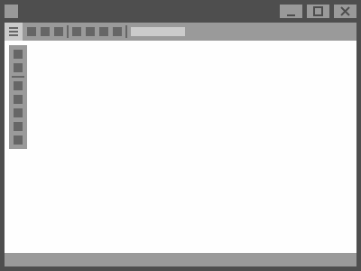
Az eszköztár az ablakos felhasználói felületek egyik legfontosabb eleme. A gyakran használt eszközök általában csoportosítva, gombok és lenyíló listák formájában helyezkednek el rajta. Ezekre kattintva párbeszédablakot nyithatunk, vagy a hozzájuk társított funkciót aktiválhatjuk. Időnként szöveges beviteli mezőt is találunk, amit általában keresésre használhatunk.
Az eszköztár az ablak bármelyik oldalán elhelyezkedhet, de általában a tetején található. Lehet rögzített és lebegő. A lebegő eszköztárakat az egérrel mozgatni is tudjuk.
Szalagos eszköztár